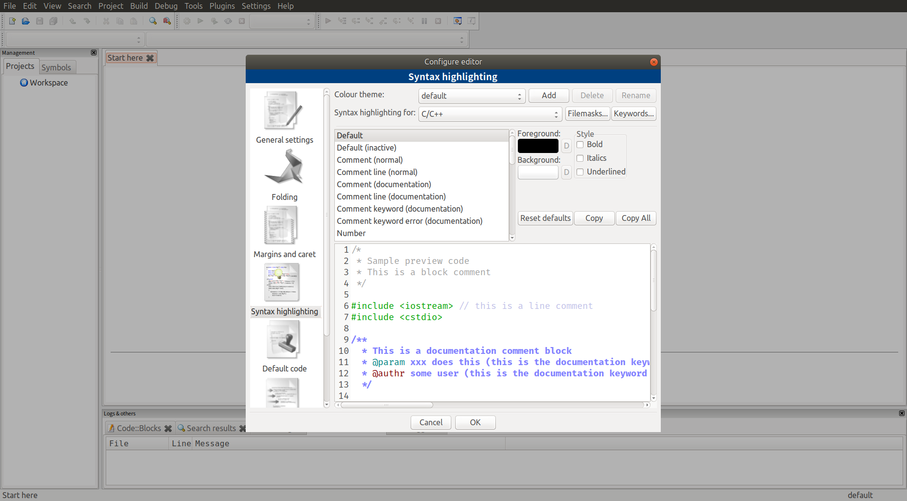
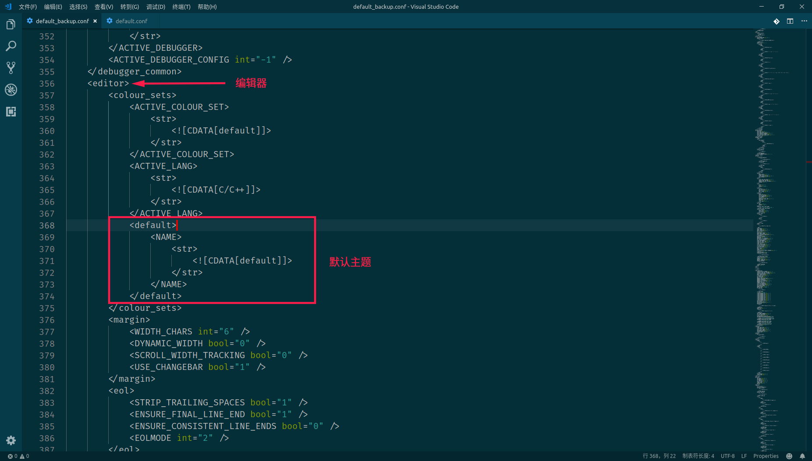
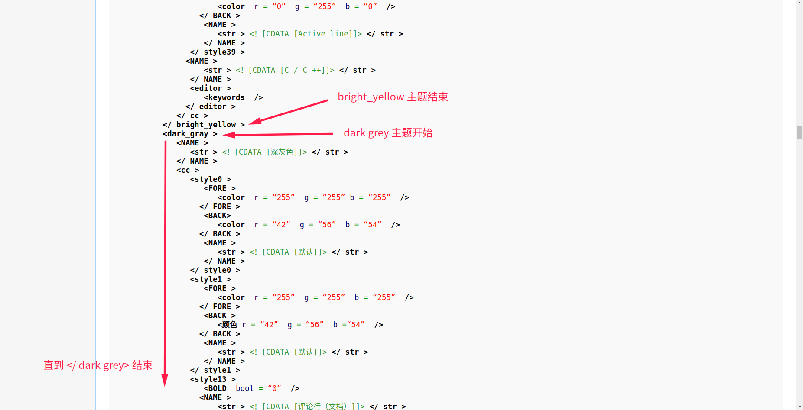
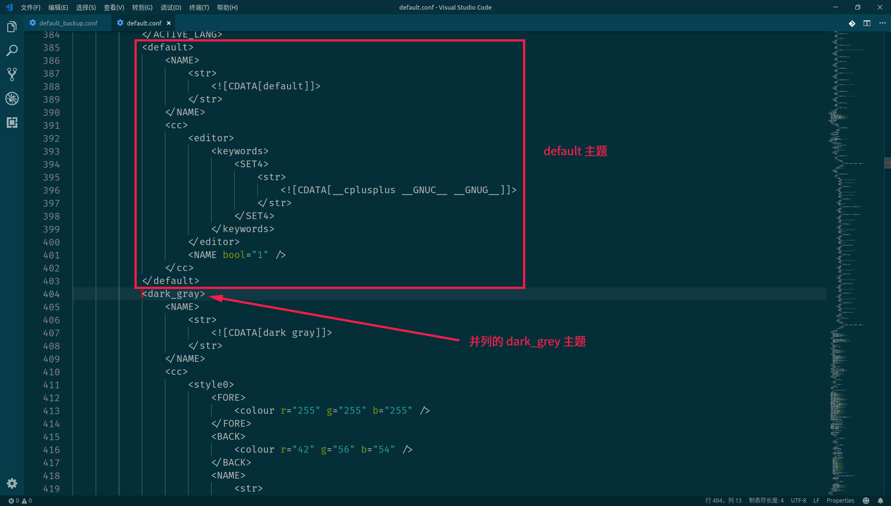

Ubuntu上自定义Code::Blocks工作区颜色主题
本文最后更新于：2022年3月23日 晚上
本文主要针对 Ubuntu 系统，理论上任何系统上也都是通用的。网上关于设置 Code::Blocks 主题的教程很多，但是都是在 Windows 系统环境下，并不适用于 Linux 系统。
可能大家都知道 Code::Blocks 的工作区主题是可以自定义的，路径 Settings —> Editor —> Syntax highlighting ，在这里就可以设置你想要的代码以及背景颜色，如图：

可以注意到顶部的 Colour theme 即颜色主题，然而后面的选项里默认只有一个 default 的主题，事实上尽管官方没有提供更多的主题，但是还是有大神做好了一系列的主题分享在网上。
主题样式请参看：Syntax highlighting custom colour themes
另外需要注意的是，这些主题仅适用于 C/C++ 语言！
建议备份所有要修改的文件以防出错～
网上的教程大概就是用这份主题的代码替换 Code::Blocks 原本的 default.conf 文件，虽然说确实是可行的，替换之后主题都能正常使用，但是实测发现，替换之后 Code::Blocks 不能保存设置了，每次重新启动都会使用默认的设置，比如说 Ubuntu 系统上我更改了设置使用 Gnome Terminal ，替换 default.conf 后每次重启 Code::Blocks 都会是默认的 xterm ，这就很影响使用体验了。
显然的 Code::Blocks 的主题颜色代码在 default.conf 中，所以我们可以找到对应的关于颜色的设置，只更改颜色相关的设置，就能完美的解决这个问题。
找到 default.conf 文件所在位置，Ubuntu 系统中它在主目录下 /.config/codeblocks 文件夹中 ，默认是隐藏起来的，可以通过快捷键 Ctrl + H 或者文件管理器右上角设置中显示隐藏文件。
用任意文本编辑器打开 default.conf ，看一下代码的结构，可以知道这个文件不仅是关于主体颜色的设置，还包括了其它的各项设置，我们直入主题找到关于颜色主题的代码段，如图所示位置：

所以我们把对应的颜色主题代码复制过来放在 default 主题前后即可，以 dark grey 主题为例，在主题代码中找到 dark grey 的代码片段，如图：

其它主题同样，都是类似的代码块：
<dark_grey>
......
</ dark_grey>可以随意添加其中一部分或者添加所有主题，复制到 default.conf 文件中与 default 主题并列的位置，保存即可！

打开 Code::Blocks ，在设置中修改颜色主题选择自己添加的主题即可，设置之后 Code::Blocks 会保存当前设置，以后打开也会保持设置过的主题！